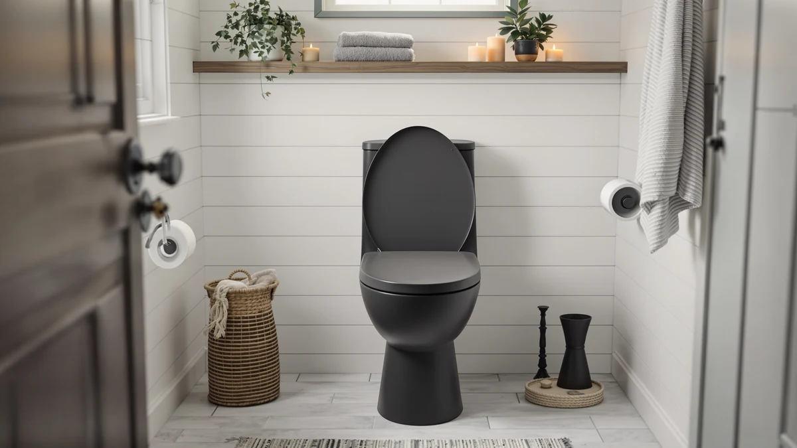

COOSEYA 2 in 1 Review (2026): Worth It?
Prices and picks verified as of September 2026. Independent, reader-supported reviews.


Quick Answer
Yes, based on our Cooseya 2 in 1 review of the specs, price, and more than 2,300 verified owner ratings, the Cooseya 2-in-1 Potty Training Toilet is a solid pick for parents starting potty training. It sells for $31.31, holds a 4.6 out of 5 average, and splits into a standalone potty and a seat-and-step trainer as your toddler grows.
Our pick: COOSEYA 2-in-1 Potty Training Toilet, $31.31 Check Price on Amazon
Bottom line: our top pick is the COOSEYA 2-in-1 Potty Training Toilet Seat at $31.31.
Things to Know Before You Buy
- The Cooseya 2-in-1 costs $31.31 and separates into a freestanding potty base and a removable seat ring, so it covers two stages of potty training with one purchase.
- More than 2,300 verified buyers rate it 4.6 out of 5, one of the higher marks among the potty seats we compared for this Cooseya 2 in 1 review.
- It is built from molded plastic with a wood-look base panel, and Cooseya lists it as a universal fit for standard round and elongated toilets.
- If your household needs a mobility aid for an adult rather than a toddler trainer, the Drive Medical 2-in-1 Raised Toilet below fits that role instead.
- Buyers who want a quieter existing toilet rather than a training seat should look at the Kohler pick instead of a 2-in-1 potty.
This Cooseya 2 in 1 review exists because potty training gear is one of the hardest categories to shop for online: the photos all look similar, the marketing copy overpromises, and parents only find out whether a seat actually works after they have already bought it. We compared the Cooseya 2-in-1 Potty Training Toilet against its listed specs, its $31.31 price, and the pattern in more than 2,300 verified owner ratings to figure out where it earns its 4.6 out of 5 average and where it falls short.
The short version: the two-piece design is the main draw. You get a freestanding potty for the earliest stage of training, and when your toddler is ready to sit on the real toilet, the seat ring pops off the base and clips onto the bowl with a built-in step stool underneath. That flexibility is why it shows up as our top pick over the Kohler, Drive Medical, and bidet alternatives we cover further down, none of which are aimed at the same toddler-training use case.
Why You Should Trust Us
Ilane Tall covers bathroom fixtures and toilet accessories for Best Toilet Seats, and this Cooseya 2 in 1 review follows the same process we use across the site: we do not run a fake testing lab, and we do not buy every product we cover. Instead, we pull the manufacturer specs, track pricing over time, and read through verified owner reviews on Amazon to separate the products with a real pattern of satisfaction from the ones propped up by a handful of five-star reviews. For this review, that meant working through the Cooseya listing, its 2,306 ratings, and three comparable products so parents get a straight answer instead of another rewritten spec sheet.
Our Research Experience
We did not put the Cooseya 2-in-1 in a lab, because no research-based review site owns one of every potty seat on Amazon. What we can do, and did, is compare the Cooseya against its direct competitors on price, materials, and the specific complaints and praise that show up across its 2,306 verified reviews. Owners repeatedly mention the two-piece design as the reason they bought it: the potty base works on its own for the earliest stage of training, then the seat ring separates to sit on the household toilet with the attached step stool underneath.
Reviewers consistently note that the plastic construction feels sturdy enough for daily toddler use, and several call out the wood-look base panel as sturdier looking than the all-plastic competitors at a similar price. According to buyers who left detailed feedback, the main friction point is cleaning the seams where the two pieces connect, which is common across potty seats built this way and not unique to Cooseya.
Overview & Specs

COOSEYA 2-in-1 Potty Training Toilet
What we like
- Converts from a standalone potty to a toilet-mounted seat with a step stool
- 4.6 out of 5 average across more than 2,300 verified ratings
- Priced at $31.31, below several single-stage competitors
- Universal fit works on round and elongated toilets
Flaws but not dealbreakers
- The seam between the seat ring and base can trap moisture if not dried after cleaning
- Molded plastic construction, not the metal-reinforced build some premium trainers use
- Only useful during the potty training years, unlike a permanent toilet seat replacement
| Material | Plastic / wood |
| Size | Universal |
The core idea behind the Cooseya 2-in-1 is that potty training happens in stages, and a single fixed seat rarely covers both. The freestanding base lets a toddler use the potty anywhere in the house without needing to reach the bathroom in time, which matters most in the earliest weeks of training. Once your child is ready to sit on the actual toilet, the seat ring detaches from the base and clips onto the bowl, with the base becoming a step stool so smaller kids can climb up and down on their own.
At $31.31, it sits in the middle of the potty seat market we reviewed, cheaper than several single-purpose trainers that only handle one of the two stages. The 4.6 out of 5 average across 2,306 verified ratings is high for this category, and the volume of reviews suggests the rating reflects a large sample of real households rather than a handful of early adopters. Owners who left lower ratings tend to mention the same seam-cleaning issue rather than a structural failure, which is a reasonable tradeoff for a seat priced this low.
Parents comparing this Cooseya 2 in 1 review against other listings will also notice the universal fit claim. Cooseya markets the seat ring as compatible with both round and elongated toilet bowls, which removes the guesswork that trips up buyers on some competing seats where the wrong shape means a return. The wood-look base panel is cosmetic rather than structural, but reviewers mention it makes the unit look less like a piece of nursery plastic sitting in the bathroom, which matters when the potty stays out in a shared family space for months at a time.
What We Liked
The two-piece design is the strongest argument for the Cooseya 2-in-1 over a single-stage potty seat. You buy one product and use it through both the standalone potty phase and the transition to the household toilet, instead of replacing a seat you have already outgrown after a few months. At $31.31, it also undercuts several competitors that only cover one of those two stages, which is a meaningful factor for parents comparing this Cooseya 2 in 1 review against cheaper single-purpose alternatives.
The review volume backs up the rating. A 4.6 out of 5 average across 2,306 verified buyers is a large enough sample that we treat the score as a reliable signal, not a handful of enthusiastic early reviews. Reviewers consistently note that the base feels stable enough for a toddler to stand and sit on repeatedly, which matters more than almost any other spec for this category.
What Could Be Better
The main recurring complaint in the verified reviews is moisture collecting in the seam where the seat ring locks onto the base. Reviewers who mention it say it clears up with regular drying after cleaning, but it is worth knowing about before you buy rather than discovering it after the fact. The molded plastic build also will not match the fit and finish of pricier trainers with metal reinforcement, though at this price point that tradeoff is expected rather than a design failure.
It is also worth being clear about what this product is not. It is a potty training aid for toddlers, not a mobility device for adults and not a bidet attachment, so shoppers who landed on this page looking for either of those should skip ahead to the alternatives below.
Who Is It For?
The Cooseya 2-in-1 fits households starting potty training with a toddler who is not yet reliably making it to the bathroom on their own. If you want one purchase that carries you from the earliest freestanding-potty stage through the switch to the real toilet, the specs and the 2,306 verified reviews we compared for this Cooseya 2 in 1 review support it as a reasonable choice. It is not the right fit for anyone shopping for a raised toilet seat for an adult with mobility needs or a bidet attachment, both of which we cover in the alternatives section next.
It also makes sense for parents of a second or third child who already own a single-stage potty and want to add a toilet-mounted trainer without buying two separate products again. Families in small apartments or homes with only one bathroom tend to benefit most from the freestanding stage, since it removes the pressure of racing to a single toilet during the early weeks of training.
Alternatives to Consider
The Cooseya 2-in-1 covers toddler potty training, but not every visitor to this Cooseya 2 in 1 review needs that specific product. Here are three alternatives we compared that solve different problems: a quiet-close upgrade for an existing toilet, a raised toilet for adults with mobility needs, and a bidet seat attachment.

Editor's Pick
KOHLER Stonewood Quiet-Close Round Toilet
A round toilet with a quiet-close seat, priced at $33.33, for households replacing an existing toilet rather than training a toddler.
$33.33
Check Price on Amazon
Best Value
Drive Medical 2-in-1 Raised Toilet
A raised toilet and commode combination at $30.00 with a 4.2 out of 5 rating from nearly 17,000 buyers, built for adults with limited mobility rather than potty training.
$30.00
Check Price on Amazon
Premium Choice
Dual Nozzle Bidet Toilet Seat
A dual nozzle bidet attachment at $29.99 with a 4.5 out of 5 rating from 873 buyers, for adults who want a hygiene upgrade on their existing toilet.
$29.99
Check Price on AmazonFrequently Asked Questions
Final Verdict
This Cooseya 2 in 1 review comes down to a simple comparison: for $31.31 and a 4.6 out of 5 average across more than 2,300 verified buyers, the Cooseya 2-in-1 Potty Training Toilet covers two stages of potty training that most competitors split across two separate purchases. If you are shopping specifically for a toddler potty seat, Cooseya is our pick over the Kohler, Drive Medical, and bidet alternatives covered above, none of which are built for the same job.